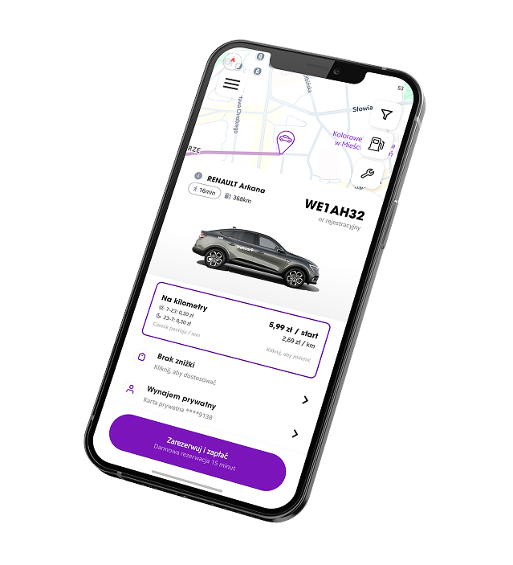
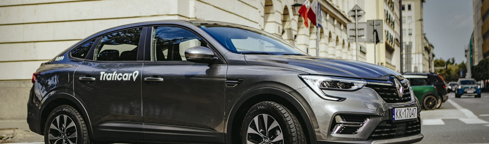

Project Overview
Traficar enables users to access cars on demand without long-term commitments. The app supports the entire journey from finding a vehicle, through booking, to ending a ride.
2022 – 2025

Traficar enables users to access cars on demand without long-term commitments. The app supports the entire journey from finding a vehicle, through booking, to ending a ride.
Owning a car involves significant costs, long-term commitments and ongoing responsibilities. Public transport and traditional rental services do not always provide enough flexibility for spontaneous or short-distance journeys.
My role involved designing new product features and improving existing solutions. I identified usability issues, explored potential solutions, created and validated designs, and prepared them for development.

Contact
If you are planning a new project or want to improve an existing one, feel free to contact me at:
marcin.zajko97@gmail.com